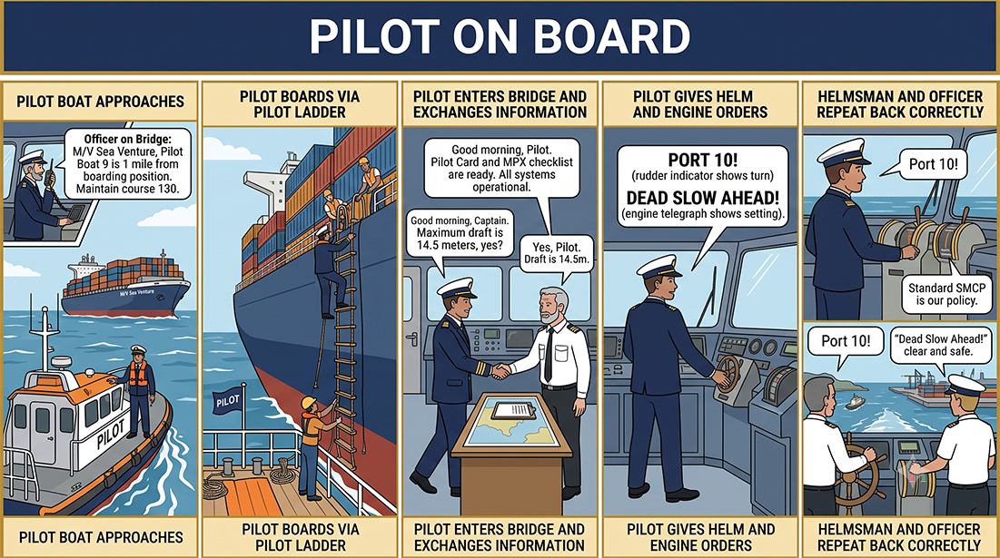

Conversation & Audio
Visual scenario, model exchange, and listening practice. Work through this page, then use the Next Page button to continue.
Pilot on Board
{kind=link}

6. Sample Conversation
Practise this conversation aloud. Pay attention to message markers, call signs, numbers, read-backs, and the words “Over” and “Out.”
Audio Practice: Unit 4 Sample Conversation
Listen to the complete pilotage exchange. Repeat the boarding instructions, helm orders, read-backs, positions, and times.
Vessel: Manila Pilot Station, this is Motor Vessel Sea Orchid. Call sign November-Kilo-Six-Five. Over.
Pilot Station: Sea Orchid, this is Manila Pilot Station. Question. What is your ETA at pilot boarding ground? Over.
Vessel: Answer. My ETA is zero-six-three-zero local time. Information. My present draught is eight decimal two metres. Request. Pilot boarding instructions. Over.
Pilot Station: Instruction. Proceed to pilot boarding ground Alpha. Instruction. Rig pilot ladder on starboard side, two metres above water. Advice. Make a lee for pilot boat. Over.
Vessel: Answer. Proceeding to pilot boarding ground Alpha. Pilot ladder will be rigged on starboard side two metres above water. I will make a lee for pilot boat. Out.
Pilot: Bridge, Pilot. Instruction. Port ten.
Helmsman: Port ten.
Pilot: Instruction. Midships.
Helmsman: Midships.
Pilot: Instruction. Dead slow ahead.
OOW: Dead slow ahead.
Conversation analysis
The sample exchange demonstrates a complete cycle: the vessel requests instructions, the pilot station gives location, side, and height, and the vessel reads back the instruction. The helm and engine orders at the end show how short command forms are used during manoeuvring.
Listening and Pronunciation Drill: Pilot Boarding and Helm Order Drill
Student task: Listen as your teacher or partner reads the script twice. On the first listening, identify the main situation. On the second listening, write the key information: station name, vessel name, marker used, position/course/time, and action required.
Instruction. Proceed to pilot boarding ground Alpha.
Instruction. Rig pilot ladder on starboard side, two metres above water.
Advice. Make a lee for the pilot boat.
Instruction. Port ten. Midships. Dead slow ahead.
Pronunciation Focus
- Starboard side, not right side.
- Zero-six-three-zero local time.
- Two metres above water.